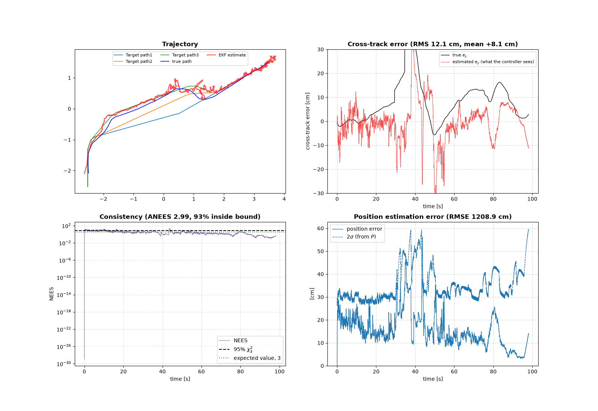
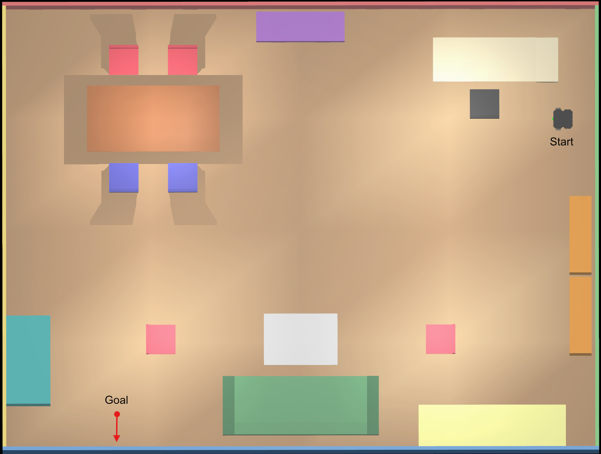
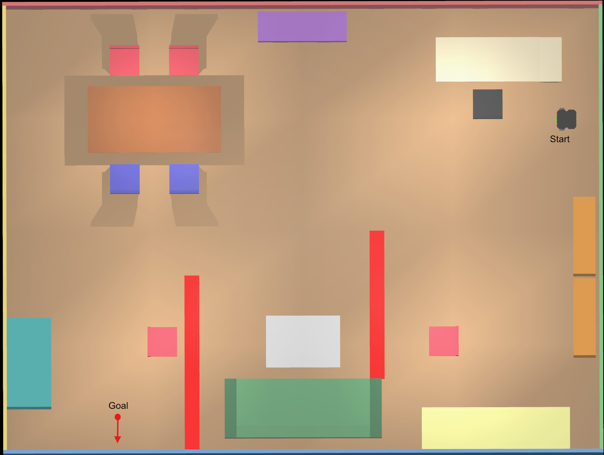
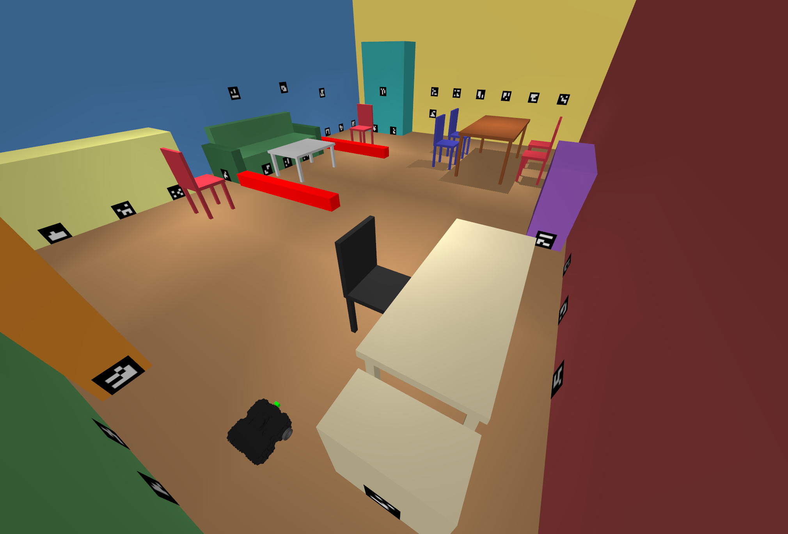
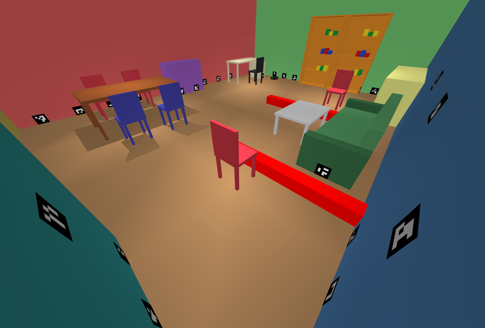

performance metrics
Scene with unmapped obstacle and distrubance applied.





The robot fuses wheel encoders with camera measurements to estimate the robot's state. The camera measures range and bearing using ArUco markers placed around the room. The base scene and map file is generated by claude. Then obstacles were added by me. The lazy theta star planner is used to generate a path, it was chosen due to its speed, and that it generated straight line paths. Using the predicted state and the generated path, the crosstrack error and heading error is calculated. The LQI controller take the errors as an input in order to track the path, by outputting angular velocity to steer (velocity is constant = 0.26 m/s). If there is an obstacle infront of the robot the LiDAR detects it and if it is closer than a threshold it will trigger a replan. During a replan the LiDAR data is converted to a local map than a point to plane ICP is applied to align the local map to the map that was previously generated. These two maps are then combined and the used for path generation.
The robot was tuned in steps. First the EKF followed by the LQI is tuned in the scene without obstacles. Then the EKF and LQI is retuned in the scene with obstacle and a disturbance (the left wheel is 1 rad/s slower than commanded) is applied to the robot.
Scene with unmapped obstacle and distrubance applied.

The Plots shows the performance metric of the robot. In the trajectory plot it is shows that the robot replanned 2 times during the simulation. The first path would have collided with the obstacle and the second triggered during a difficult state estimation period causing the robot to navigate towards the wall instead of away. Around (1,1) the state estimation breaksdown abit because there is only 4 markers visible and one of them is unstable. The crosstrack plot tells us that there is a steady state offset of +8.1cm and on average its (+/-)12.1 cm away from the path. NEES shows that the EKF is not overconfident and not underconfident about its estimation, it reaches the lowest estimation error possible. The position estimation error plot show that the position error escaped the 2 sigma bound, during this period the estimate is overconfident.
This robot is far from perfect, it struggles to estimate it state when the markers are covered or when turning. The simulation does not introduce the randomness of the real world, when the same variables is run multiple time the same result will be obtained. Thus more disturbance such as friction, or lossy motors should be added before applying it to a real robot. To fix the state estimate problem the LiDAR odometery data could also be fused to minimize the error. The camera used to detect the markers does not have distortion, this does not reflect real world cameras. If the robot is faced with a dynamic obstacle it will most likely fail, a more robust obstacle detection method such as turning the LiDAR into local costmaps and running a local planner with that costmap could be used.
@article{park2021nerfies,
author = {Park, Keunhong and Sinha, Utkarsh and Barron, Jonathan T. and Bouaziz, Sofien and Goldman, Dan B and Seitz, Steven M. and Martin-Brualla, Ricardo},
title = {Nerfies: Deformable Neural Radiance Fields},
journal = {ICCV},
year = {2021},
}